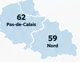

Nord (59)
Auby, Flers-en-Escrebieux, Douai, Sin-le-Noble, Lambres-lès-Douai, Cuincy, Waziers et Râches.
Deprun Couvreur annonce des interventions dans les départements du Nord (59) et du Pas-de-Calais (62).
Les localités ci-dessous proviennent des informations communiquées par Deprun Couvreur.
Auby, Flers-en-Escrebieux, Douai, Sin-le-Noble, Lambres-lès-Douai, Cuincy, Waziers et Râches.
Leforest, Carvin, Oignies, Libercourt, Hénin-Beaumont, Estevelles, Montigny-en-Gohelle et Noyelles-Godault.
Pour toute autre commune, contactez l’entreprise afin de confirmer la possibilité et les modalités d’intervention.
La carte ci-dessous permet d’identifier les deux départements couverts par l’entreprise.

Fuite, tuiles endommagées ou dégâts de tempête : contactez l'entreprise.